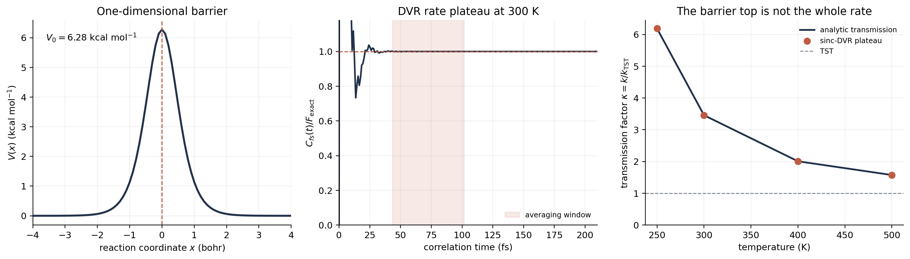

Chemical Reaction Computation - Part II
From a Barrier to a Rate
The first article began at the experimental end of the problem: a detector gives us a signal, not a transition state. We now take the first historical step in the opposite direction. Physical chemists faced a deceptively simple question: if a reaction has to cross an energetic bottleneck, how can that bottleneck be turned into a number with units of inverse time?
This is where the modern computational story really starts. Arrhenius organized the temperature dependence of measured rates. Transition-state theory then connected that dependence to a molecular energy landscape. The result was not merely another fitting law: it was a calculational machine. Give it a reactant ensemble and a dividing surface, and it returns a rate. Its power—and its assumptions—are easiest to see by placing it beside a small quantum calculation on exactly the same barrier.
1. Before the molecular path: Arrhenius
In 1889, Arrhenius expressed a regularity already visible in kinetic measurements:
Here I write \(k_{\mathrm{obs}}\) deliberately: this is the rate extracted from an experimental kinetic model. Taking a logarithm does not make \(k\) logarithmic in \(T\). It produces a linear relation between \(\ln k_{\mathrm{obs}}\) and the inverse temperature:
If we define \(x=1/T\), this has the elementary straight-line form \(y=b+mx\):
Thus the activation energy is a slope extracted from the temperature dependence of a rate. It is not automatically the height of a particular saddle point. If the Arrhenius plot bends, the derivative above still defines a local, temperature-dependent apparent activation energy. The prefactor \(A\) collects everything the simple exponential has left out.
In other words, Arrhenius gave kinetics a compact empirical coordinate. The next problem was to give that coordinate a molecular meaning.
2. Putting the reaction on an energy landscape
By the 1930s, quantum mechanics and statistical mechanics made it natural to imagine a reaction moving on a potential-energy surface. Reactants occupy one region; products occupy another; between them lies a bottleneck. The 1935 formulations of Eyring and of Evans and Polanyi converted the equilibrium population of that bottleneck into a rate.
Step 1: count configurations at the bottleneck
Let \(Q_R\) be the reactant partition function and \(Q^{\ddagger}\) the partition function at the dividing surface, with the unstable reaction-coordinate mode omitted. Under the quasi-equilibrium assumption, their population ratio is
Appropriate standard-state factors are understood in this compact notation. The exponential pays the energetic cost of reaching the bottleneck; the partition-function ratio counts how many thermally accessible configurations exist there relative to the reactant region.
Step 2: turn that population into one-way flux
At the dividing surface, only positive momentum along the reaction coordinate contributes to forward flux. Its classical phase-space factor is
where \(E=p^2/(2m)\) and therefore \(dE=(p/m)dp\). Multiplying this one-way crossing frequency by the bottleneck population gives
This derivation shows exactly where the famous prefactor comes from. The unstable coordinate is not included as an equilibrium vibration in \(Q^{\ddagger}\); it is replaced by the positive flux through the dividing surface.
Step 3: rewrite the molecular bookkeeping as a free energy
The activation free energy is defined so that the energetic and statistical factors satisfy
Consequently the same TST result can be written in its familiar Eyring form,
Using \(\Delta G^{\ddagger}=\Delta H^{\ddagger}-T\Delta S^{\ddagger}\) then gives
Taking the logarithm explains why an Eyring plot is not an ordinary Arrhenius plot:
If \(\Delta H^{\ddagger}\) and \(\Delta S^{\ddagger}\) are nearly constant, \(\ln(k/T)\) is linear in \(1/T\). For the same assumptions, differentiating \(\ln k\) yields the connection to the Arrhenius slope:
Arrhenius and Eyring are therefore not contradictory temperature laws. Arrhenius summarizes the slope of \(\ln k\); Eyring explains that slope using an activation enthalpy, an activation entropy, and the additional \(T\) prefactor. Heat-capacity changes, changing mechanisms, or temperature-dependent transmission factors can curve either plot.
This is the conceptual leap: a rate is no longer inferred only from a fitted slope. It is assembled from molecular energies and statistical populations. A geometry optimization can locate a saddle, vibrational analysis can approximate the partition functions, and the result can be compared with a measured elementary rate.
3. The bargain made by transition-state theory
TST is useful because it replaces a dynamical problem with an equilibrium counting problem. That replacement comes with a clear bargain:
- The reactant region and the configurations near the dividing surface are treated as being in thermal quasi-equilibrium.
- A suitable dividing surface separates reactants from products.
- A trajectory counted as moving forward through that surface is assumed to form product without being counted again after a return.
- The coordinates not designated as the reaction coordinate can be represented by their equilibrium partition functions.
These statements are more informative than the slogan “find a barrier and exponentiate it.” They tell us what must be tested. Is the selected surface really a bottleneck? Do trajectories recross it? Are the other modes equilibrated and approximately separable? Does a finite-width barrier transmit a wave in the same way as an infinitely sharp threshold?
It is therefore helpful to write a more honest rate as
where \(\kappa\) is not a universal “tunneling number.” It is a compact record of the dynamical physics absent from the chosen TST model. Depending on the system and convention, finite-barrier transmission can raise the rate, while reflection, recrossing, friction, or a poor dividing surface can lower it.
4. A miniature calculation: one barrier, two rate estimates
To make the comparison concrete, consider a one-dimensional Eckart barrier,
with a proton mass, \(V_0=0.010\ E_h=6.28\ \mathrm{kcal\ mol^{-1}}\), and \(a=1.50\ a_0^{-1}\). This is not intended to represent a particular molecule. It is a controlled question: if two theories see exactly the same smooth barrier, what changes when one treats the passage as a dividing-surface count and the other propagates quantum mechanics on the entire coordinate?
The parameters have transparent meanings. Since \(\operatorname{sech}(0)=1\) and \(\operatorname{sech}(ax)\to0\) as \(|x|\to\infty\), the barrier height is \(V(0)=V_0\) and the asymptotes lie at zero. Expanding around the top,
Comparing this with an inverted harmonic barrier,
shows that \(a\) controls the barrier curvature and width. Two barriers with the same \(V_0\) but different \(a\) have the same TST exponential in this reduced model, yet need not have the same dynamical transmission.
The TST estimate
We choose \(Q^{\ddagger}=Q_R=1\) for the reduced one-dimensional normalization, so that only the common barrier is being compared. The TST expression becomes
At 300 K, \(k_{\mathrm B}T/h=6.25\times10^{12}\ \mathrm{s^{-1}}\), while \(RT=0.596\ \mathrm{kcal\ mol^{-1}}\). Therefore
This number is a model rate under a specified normalization, not a prediction for an experimental solution reaction.
From a continuous Hamiltonian to a sinc-DVR matrix
For the second calculation, the coordinate is sampled on equally spaced points \(x_i=x_{\min}+i\Delta x\). A sinc-DVR basis function centered at \(x_i\) is
Because \(\phi_i(x_j)=\delta_{ij}/\sqrt{\Delta x}\), the coordinate and potential operators are diagonal under the DVR quadrature:
Applying \(-\hbar^2\partial_x^2/(2m)\) to the cardinal sine functions gives the analytic kinetic-energy matrix
After including the Fourier normalization, the \(i=j\) integral gives \(\pi^2/(3\Delta x^2)\). For \(i\ne j\), writing \(n=i-j\) gives \((2\pi)^{-1}\int_{-\pi}^{\pi}u^2e^{inu}du=2(-1)^n/n^2\). Hence
The numerical Hamiltonian used here is consequently
We use 701 grid points over \([-35,35]\ a_0\) and retain the lowest 300 eigenstates,
From product population to a flux operator
Define \(\hat h=\Theta(\hat x)\), which equals zero on the reactant side and one on the product side. In the Heisenberg picture,
Differentiating with respect to time gives the rate of change of product-side population:
At \(t=0\), this derivative is the flux operator,
The thermal flux–side correlation function correlates an initial crossing with product occupancy at a later time:
This trace can be evaluated directly from the DVR eigenpairs. If \(h_{nm}=\langle n|\hat h|m\rangle\), then
and insertion of two energy-basis resolutions of the identity gives
This is the finite sum evaluated by the accompanying script. After a short transient, the correlation reaches a plateau before waves return from the edge of the finite box. In that time window,
Dividing by the same reactant normalization used in TST gives the DVR rate. The ratio of the two rates does not depend on that shared normalization.
The scattering formula that unifies TST and DVR
For one-dimensional scattering, the same thermal flux can be written as an energy average of the transmission probability \(P(E)\). Begin with positive incident momenta:
Using \(E=p^2/(2m)\) and \(dE=(p/m)dp\) gives
TST replaces the real, smooth transmission function by an ideal threshold:
Substitution immediately recovers the reduced TST expression:
The exact Eckart barrier provides a smooth transmission probability,
The route to this closed form is short in concept, although the intermediate algebra uses special functions. Insert \(y=ax\) into the stationary Schrödinger equation and define
The substitution \(z=(1+\tanh y)/2\) maps the two asymptotes to \(z=0\) and \(z=1\), with \(\operatorname{sech}^2y=4z(1-z)\). Factoring out the traveling-wave behavior,
converts the remaining equation for \(f\) into the Gauss hypergeometric equation. Matching its \(z\to0\) and \(z\to1\) connection coefficients gives incident, reflected, and transmitted amplitudes. Reducing their gamma-function ratios with
yields the compact \(S^2/(S^2+C^2)\) expression above, with \(\lambda=\sqrt{4\eta-1}\). The analytic curve is used only to validate the DVR plateau; it is not supplied to the DVR Hamiltonian.
Finally, dividing the exact thermal flux by the TST flux produces the transmission factor plotted below:

5. Reading the result
| Temperature | \(k_{\mathrm{TST}}\) (s\(^{-1}\)) | \(k_{\mathrm{DVR}}\) (s\(^{-1}\)) | \(\kappa\) |
|---|---|---|---|
| 250 K | \(1.70\times10^7\) | \(1.05\times10^8\) | 6.19 |
| 300 K | \(1.68\times10^8\) | \(5.80\times10^8\) | 3.46 |
| 400 K | \(3.11\times10^9\) | \(6.24\times10^9\) | 2.01 |
| 500 K | \(1.88\times10^{10}\) | \(2.97\times10^{10}\) | 1.58 |
Three points matter more than the individual numbers.
- The barrier height alone does not specify the rate. TST uses the height and equilibrium statistics at the bottleneck. DVR additionally responds to barrier width, shape, mass, and coherent dynamics.
- The discrepancy is temperature-dependent. At high temperature, more of the thermal distribution lies near or above the barrier and the two descriptions approach each other. Cooling makes the detailed transmission of the finite barrier increasingly important.
- The benchmark is numerically controlled. The DVR plateau differs from the analytic Eckart thermal flux by about \(0.01\%\) or less at all four temperatures. We are therefore comparing physical approximations, not an unconverged grid with a formula.
This example should not be turned into the claim that TST always underestimates a rate. The model has one smooth coordinate and no solvent or internal modes. In a multidimensional system, recrossing and environmental friction can push \(\kappa\) below one, while nuclear delocalization and sub-barrier transmission can push it above one. What \(\kappa\) means depends on what was already included in \(k_{\mathrm{TST}}\).
6. What would be compared with experiment?
The small calculation clarifies the chain, but a molecular application has several additional links:
- Compute or sample the relevant molecular free-energy surface under the experimental conditions.
- Evaluate reactant and transition-region partition functions consistently, including conformers and environmental configurations.
- Apply a dynamical treatment appropriate to the question: a transmission correction, trajectories, an instanton, a flux correlation function, or a nonadiabatic rate expression.
- Embed the elementary rate in the kinetic network that produces \(k_{\mathrm{obs}}\).
- Test the result across temperature, isotopic substitution, solvent, pressure, or another held-out perturbation rather than only matching one fitted rate.
The fourth step can already matter in the smallest possible network. Suppose the observed reactant pool contains a rapidly equilibrating inactive form \(R\) and reactive form \(I\), followed by the calculated chemical step:
Because \([R]_{\mathrm{tot}}=[R]+[I]=(1+K)[R]\) and \(d[P]/dt=k_{\mathrm{chem}}[I]=k_{\mathrm{chem}}K[R]\), the fitted first-order rate is
Even a perfect calculation of \(k_{\mathrm{chem}}\) therefore need not equal the measured \(k_{\mathrm{obs}}\). The equilibrium population factor can also be temperature- and isotope-dependent.
This also explains why comparing a computed electronic saddle-point energy directly with an experimental Arrhenius activation energy is unsafe. One belongs to a potential-energy surface; the other is a derivative of an observed rate. Free energy, quantum nuclear effects, recrossing, and network kinetics lie between them.
7. What this first theoretical step accomplished
Arrhenius told us how rates often vary with temperature. Transition-state theory supplied the first broadly useful bridge from a molecular landscape to an absolute rate. Exact quantum dynamics then gave us a way to audit the bridge without assuming that the dividing surface had captured all the dynamics.
The enduring lesson is not that one of these descriptions must defeat the others. They answer nested questions. Arrhenius summarizes a trend. TST attributes the trend to equilibrium population at a bottleneck. DVR dynamics tests what happens after the full Hamiltonian is allowed to move that population. The next article follows another major historical exploration: multistate reactions and nonadiabatic dynamics, where one potential-energy surface is no longer enough. Later we will return to free energy and rare-event sampling, and explore tunneling and quantum nuclear dynamics.
Reproduce the calculation
The script contains the model parameters, sinc-DVR kinetic matrix, flux–side calculation, plateau window, analytic Eckart check, and figure generation. It requires NumPy, SciPy, and Matplotlib.
References
- Arrhenius, “Über die Reaktionsgeschwindigkeit bei der Inversion von Rohrzucker durch Säuren,” Zeitschrift für Physikalische Chemie 4, 226–248 (1889).
- Eyring, “The Activated Complex in Chemical Reactions,” J. Chem. Phys. 3, 107–115 (1935).
- Evans and Polanyi, “Some Applications of the Transition State Method to the Calculation of Reaction Velocities, Especially in Solution,” Trans. Faraday Soc. 31, 875–894 (1935).
- Eckart, “The Penetration of a Potential Barrier by Electrons,” Phys. Rev. 35, 1303–1309 (1930).
- Miller, Schwartz, and Tromp, “Quantum Mechanical Rate Constants for Bimolecular Reactions,” J. Chem. Phys. 79, 4889–4898 (1983).
- Colbert and Miller, “A Novel Discrete Variable Representation for Quantum Mechanical Reactive Scattering via the S-Matrix Kohn Method,” J. Chem. Phys. 96, 1982–1991 (1992).
- IUPAC Gold Book, “transition state theory”.